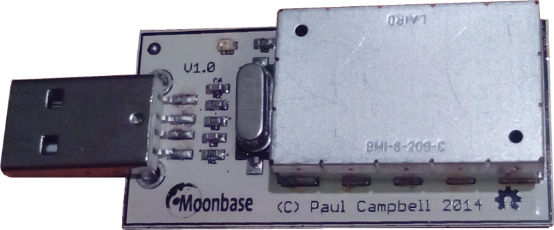
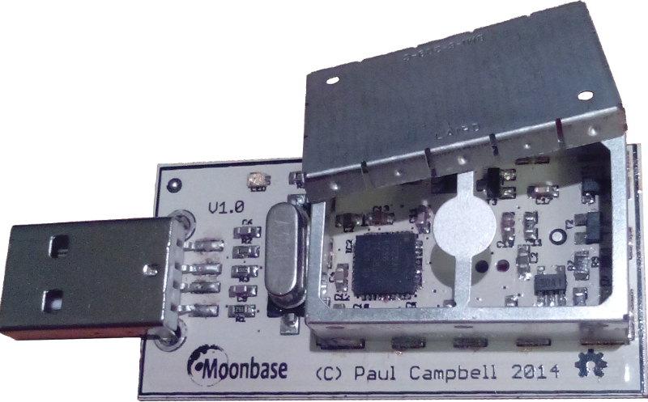

OneRNG
An Open Hardware & Open Source
Verifiable Random Number Generator
LCA2015
Jim Cheetham & Paul Campbell
What is OneRNG?
It is a small USB-connected device
It speeds up & increases your computer's ability
to provide you with high-quality random numbers
It has a Tin-Foil Hat
It has a Tin-Foil Hat
Entropy Generator

The cake is a lie …
By default, OneRNG measures unpredictable physical events
from an avalanche diode circuit
and returns the results — but this is a bit too raw to be used directly
Whitened data

This raw data is then whitened through a CRC16 function which makes it good enough to be fed into your system
There is an AES hardware module available, but it is not used by the default firmware
Keep topping up the pool
There's a 7.5KB pool of data that is kept full
New data is mixed in over the old data all the time
A LED on the board tells you when the pool is full
and warns you when it is getting empty
/dev/urandom

The results are fed into /dev/random as an additional
entropy source for the system, and you should read them from there
If you RTFM, you'll read from /dev/urandom all of the time
on Linux, but not necessarily on other OSs
And there's more …
You can also enable the RF monitor to get another source of entropy data with a higher quality — but at the cost of a little paranoia
The flow of data

Why random numbers?

Cryptography has a huge appetite for random data
And your online Privacy and Security depends on Crypto
The more you encrypt, the more entropy you need to consume
altcoin also requires high quality random data - coins have been stolen because of weak RNGs
Non-crypto random numbers?

Astronomy Miniconf reminds us that "SCIENCE!" uses large-scale numerical simulations (Monte Carlo, Markov Chain, etc), and while they can use PRNG, they need to be careful about periodicity/repeats
I know nothing about the "Gaming" industry, but they need it, surely?
PRNG

Don't ever use the default <INSERT_LANGUAGE_HERE> random() function!
Don't use PID, or μsecs since epoch, or wall time
Don't do your own crypto, don't do your own RNG
By default, use /dev/urandom
True RNG vs PRNG

Even if your PRNG is a CSPRNG, you'll feel the need for seed
Get your seed values from a True RNG
Only generate your long-lived private keys when there is sufficient entropy
How much random can a /dev/random random?

Never mind the quantity, feel the quality
… unless you needed quantity, that is …
If your True RNG returned sufficient data, why use PRNGs at all?
(because you must mix multiple entropy sources together)
Just because you're paranoid …

Even if they aren't out to get you, they'll get you.
Known Badness

- RSA SecurID token breach
- The entire Certification Authority system
- Dual EC_DRBG, $10 million NSA/RSA deal
- RdRand and the Sigint Enabling Project …
Known Badness II
- Supply-chain interception
- BIOS Chronomancy; will persist across reflashing
- Supercookies, Evercookies
- NSA vs Vodafone (aka "We are the 43%")
Known Badness III
- Everything "Edward Snowden"
- ! (Everything "Eben Moglen")
How are issued fixed?

When risks are “addressed” they are usually pushed either up or down the stack
They end up requiring trust in End-User Behaviour (unpatchable) or in the Hardware
How does OneRNG help?
Being an Open Hardware and Open Source solution is a start
But the OneRNG is also designed to be verifiable
No Trust Needed

You should not trust this device — you do not need to trust this device
You should VERIFY that what you physically hold is what you need to have
How to verify the hardware
- Remove the Tin-Foil Hat (ours, not yours)
- Identify the components
- Identify the connections, top and bottom
- Research the one complex component, the CC2531 chip
- See how much storage it has (256KB or 128KB)
How to verify the software

- Plug the device into a machine
- Dump the firmware into a file
- Confirm the data is the full 256KB
- Validate the GPG signature
- Confirm the data is ‘uncompressible’
Scripts on your server should do steps 2,3 & 4 on startup
What does verification tell you?

- The hardware you received conforms with the description
- The firmware that is used matches the source
- Tampering would be detectable
What will OneRNG provide on Linux?
"More Entropy" means that /dev/random is less likely to block
"Early Entropy" means that /dev/urandom will be well-seeded before key generation
Real independent crypto users have another affordable high-quality source
Using OneRNG with Linux
We provide some software for you to use to make OneRNG an input to /dev/random via rngd
This is architecture independent - python & shell scripts
… and we don't get involved in your choice of init daemon …
Just plug it in …
UDEV detects the device (using an ID assigned from OpenMoko's range)
On insertion we validate the firmware, then start rngd
On removal we remember to stop rngd for you!
… but never leave me
Increasingly, UDEV implementations make life more complex
No-one seems to bother with UDEV removal scripts
so the mechanism is probably not very well tested
Serial over USB?
USB CDC drivers are the generic USB serial interface
Sadly ModemManager stomps on every one unless you remember to disable it in UDEV
OneRNG doesn't support Hayes AT commands …
UDEV: ENV{ID_MM_DEVICE_IGNORE}="1"
Wireshark will capture USB traffic if you need it - modprobe usbmon first
Diversion: Why does /dev/random block?
The NSA-designed SHA-1 was not fully "trusted"
The blocking behaviour is a defence against this untrusted DRBG
Ted T'so, 2015 “… the paranoiacs were *right* that the NSA had introduced a back-door into a crypto algorithm which they gifted to the civilian world. It just turned out to be DUAL-EC instead of SHA-1.”
Just use /dev/urandom :-)
What's the difference between /dev/random and /dev/urandom?
These are fundamentally the same :-)
They will behave identically with sufficient entropy
Use /dev/urandom
Use /dev/urandom
Use /dev/urandom
If you already know better, you don't need me to tell you what to do
How does OneRNG help /dev/random?
Even though you should use /dev/urandom
OneRNG helps to avoid the need to block
Therefore systems that use /dev/random run faster?
(Catalyst are simlating workloads to quantify this assertion)
The more the merrier
A small quantity of good entropy is enough to improve everything
But the more sources of entropy you have, the better off you are
As well as OneRNG, please add other sources
Complements to OneRNG
- SW: rtl-entropy from SDR - https://github.com/pwarren/rtl-entropy (Paul Warren, LCA2014)
- HW: USBtrng - http://altusmetrum.org/USBtrng/ (Bdale Garbee/Keith Packard, DebConf 2014)
- SW: Turbid from audio I/O - http://www.av8n.com/turbid/ (John Denker, 2002-date)
- HW: NeuG ("noisy") - http://git.gniibe.org/gitweb/?p=gnuk/neug.git (Yutaka Niibe, DebConf 2014)
To get volume production set up, we used Kickstarter with an NZD$10,000 target over 45 days
This is still running - we started just after Kiwicon8, on 15 Dec 2014, and will finish a couple of weeks after LCA2015, on 29 Jan 2015
https://www.kickstarter.com/projects/moonbaseotago/onerng-an-open-source-entropy-generator

Rewards:
- $50 NZD - a single OneRNG from bulk manufacturing
- $90 NZD - a device programmer unit
- $110 NZD - a single hand-built unit
- $140 NZD - a single OneRNG from bulk, plus programmer
- $190 NZD - a single hand-build unit, plus programmer
- $200 NZD - 5 pack OneRNG from bulk
- $290 NZD - 5 pack OneRNG from bulk, plus one programmer
- $400 NZD - 10 pack OneRNG from bulk

(As of Tue 13 Jan 2015)
50% funded after 2 days
100% funded after 6 days
200% funded after 18 days
Least Squares currently predicts ~400% funding at close :-)
Current position
Thu Jan 15 2015: 252 backers, NZD$27,034 raised, 13 days to go
What next?
Q & A
http://onerng.info/
Credits
Presentation resources :-
Software - reveal.js, hosted on Github

Icons used are from The Noun Project, http://creativecommons.org/licenses/by/3.0/us/ licensed
Arrow and Bent Arrow by Thomas Le Bas, Dice by Weston Terrill, Toothbrush, Radio by Joe Harrison, Avalanche by Louis Dawson, Swimming Pool by Sitara Shah, Clock by Nick Green, Guy Fawkes by Christopher T. Howlett, Pac-Man by Luigi Di Capua, Surveillance by Luis Prado, Audit by Miroslav Koša, Skydiving by Jual Pablo Bravo, CPU by iconsmind.com, Certificate by Alex Auda Samora, Incognito by Alen Krummenacher, Layers by Cornelius Danger, Search by Melvin Salas, Infographic by Rob Gill, Seed Packet by Anton Gajdosik (Public Domain)